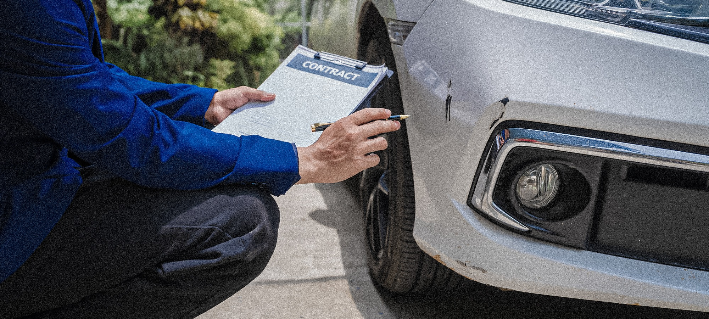

Salt Lake City Auto Appraisers is part of the AVR Group family of appraisal companies, founded and led by Danny Hudson. Danny is a nationally recognized auto appraiser with over 26 years of combined experience in auto appraisal, automobile dealership operations, and insurance adjusting. He is the Founder and CEO of the American Society of Certified Auto Appraisers (ASCAA), the national certification body that sets the professional standard for auto appraisers across the United States.
Danny personally founded Salt Lake City Auto Appraisers to bring ASCAA-certified, USPAP-compliant vehicle appraisal services to clients throughout the state of Georgia. Every Salt Lake City Auto Appraisers appraisal is performed by Danny or an ASCAA-certified appraiser personally trained and vetted through the ASCAA certification program.
Danny holds ASCAA Certification #1095363, is a Licensed Adjuster, and is a qualified appraiser under IRS rules (IRC §170(f)(11)(E) and Treasury Reg. §1.170A-17) for Form 8283 charitable vehicle donations. Our team also includes National Automobile Dealer Association members, I-CAR certified body repair technicians, and additional licensed adjusters.
Every Salt Lake City Auto Appraisers appraisal follows the ethics, standards, and methodology of the American Society of Certified Auto Appraisers and the Uniform Standards of Professional Appraisal Practice (USPAP). Our reports are accepted by insurance companies, state and federal courts, attorneys, the IRS, banks, and credit unions across Utah and nationwide.
When you hire Salt Lake City Auto Appraisers, you work directly with the professional who built America's auto appraiser certification body. We pride ourselves on fair, unbiased, court-defensible appraisals — in Salt Lake City, across the state of Georgia, and beyond.
Danny Hudson — Founder & President, American Society of Certified Auto Appraisers (ASCAA)
Danny Hudson is a Houston, TX-based auto appraisal professional with over 26 years of hands-on experience in every facet of the industry — from diminished value claims and total loss disputes to classic car valuations and insurance appraisal clause proceedings.
He founded ASCAA to create a certification body that teaches appraisers the way the profession actually works, not just the theory. Every appraiser serving Salt Lake City is trained and certified to that same standard.
ASCAA Certification #1095363 · Licensed Adjuster · 26+ years of experience
Every appraisal follows ASCAA standards and the Uniform Standards of Professional Appraisal Practice
NADA members, I-CAR certified body repair technicians, licensed adjusters, IRS qualified appraisers